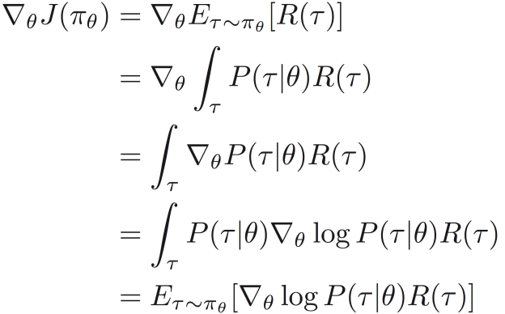
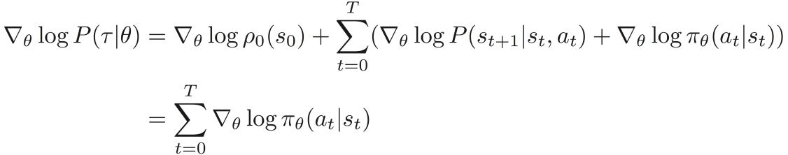
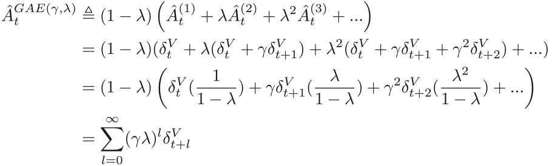
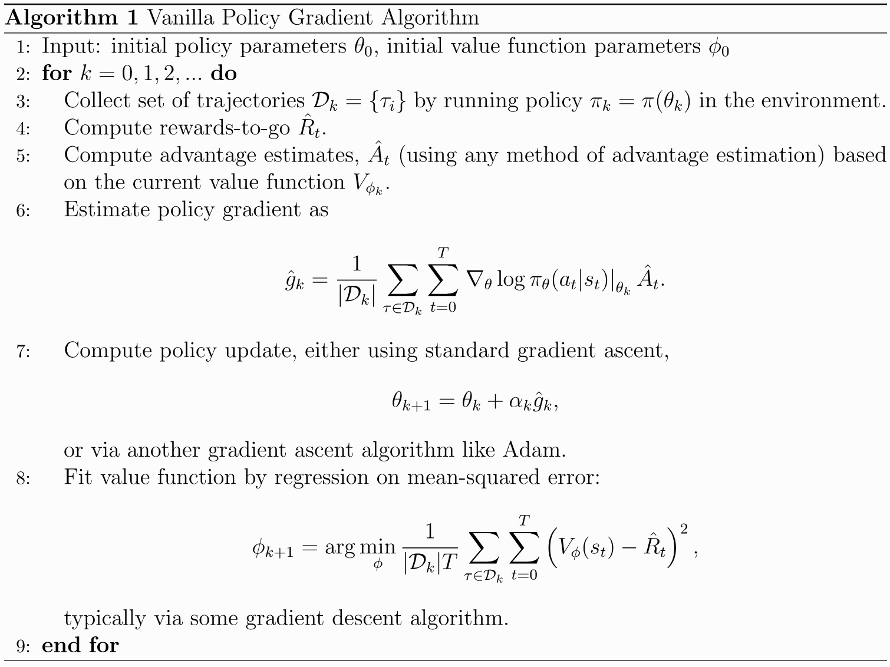
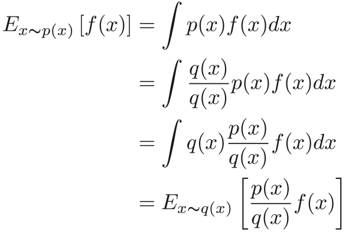
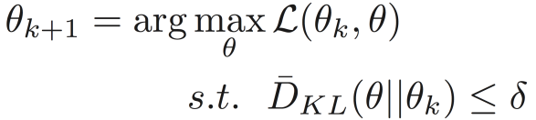
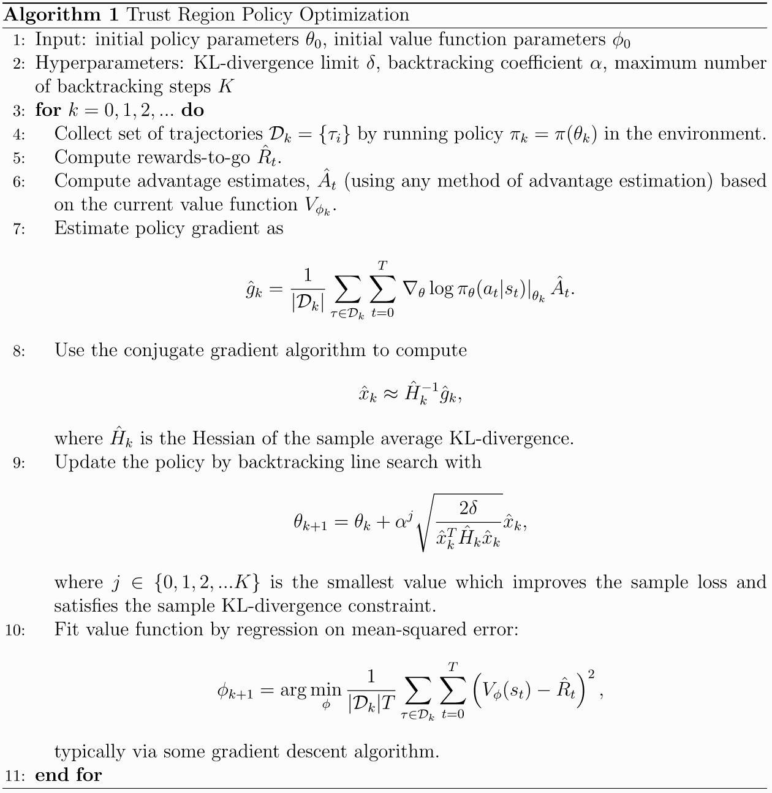
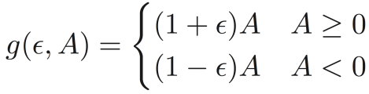
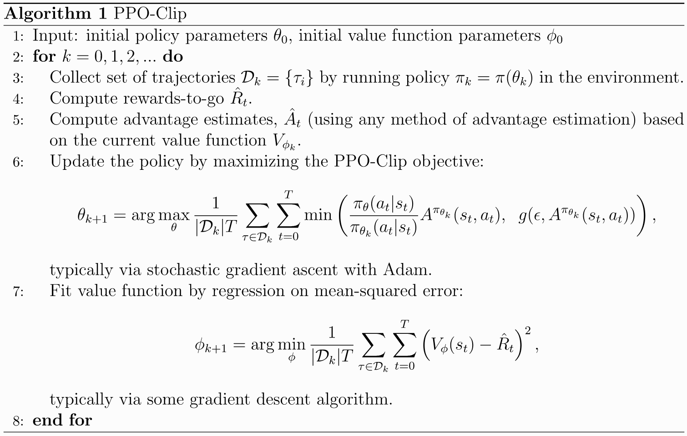

(三)基于策略的强化学习
相比基于价值的方法，基于策略的方法不需要显式的估计每个{状态，动作}对的Q值，通过估计策略函数中的参数，利用训练好的策略模型进行 决策。由于采用随机策略函数可以为agent提供探索环境的能力，不需要采用epsilon-greedy策略就可以对环境进行探索，因此基于策略的强化学习 算法通常使用随机策略函数进行决策。
一.Policy Gradient算法(PG)
Policy-Gradient算法的目标是最大化agent与环境交互过程中的整个轨迹(trajectory)上的期望累计回报，即
1.策略梯度的推导
现在我们来计算目标函数对模型参数θ的导数：

回顾第一节介绍的基本概念，可以计算得到轨迹的概率：
对概率公式取对数可得：
对数概率公式对参数求导可得：

根据上述步骤，可以获得Policy Gradient算法中的目标函数对模型参数θ的梯度为：
当梯度公式中R(τ)的确定后，就可以利用梯度提升等算法更新模型参数：
2.回报的不同形式
(1)累计回报或者累计折扣回报
最简单的Policy Gradient算法中的累计回报采用第一节介绍的累计回报或者累计折扣回报，即：
(2)reward-to-go Policy Gradient
在使用第一节介绍的累计回报或者累计折扣回报训练模型时，由于参数的梯度与整条轨迹的总体回报有关，模型并不知道整个交互过程
中哪些行动带来了更多的回报，这样就会导致模型无法很快的找到真正有价值的动作，从而使得模型的收敛速度缓慢。使用reward-to-go替代累计
回报，可以一定程度上加快模型的收敛。
reward-to-go定义为：
因此，策略梯度为：
(3)对reward-to-go进行中心化
对于任何一个只依赖状态st的函数b(st)，都满足：
因此，策略梯度可以改写为：
大量经验表明，当b(st)=Vπ(st)时，能够降低策略梯度估计的方差，提高模型收敛速度，增强模型稳定性。
然而在实际使用中，每个状态的价值Vπ(st)是未知的，需要对价值进行估计。使用另一个深度学习模型Vφ(st)对价值函数进行估计，模型的目标函数为：
(4)Vanilla Policy Gradient
VPG算法用优势函数代替策略梯度中的累计回报，此时策略梯度改写为：
(4.1)优势函数的估计
定义TD残差为：
记
则广义优势估计(generalized advantage estimator)定义为：

相比回报函数的其他形式，优势函数更能体现不同动作的好坏差异，因此在基于策略的强化学习算法中经常使用。
(4.2)VPG算法伪代码

二.Trust Region Policy Optimization算法(TRPO)
上述介绍的Policy-Gradient算法关注点在于模型的参数，在使用梯度提升等算法时，需要控制模型更新的步长，以使模型逐渐提升，避免出现 模型参数剧烈变化的情况；然而在强化学习问题中，在参数层面上对模型进行微小的调整后，对应到策略函数层面，也可能会使新旧策略函数之间 产生巨大的差异，从而使得agent在环境中的表现相差巨大。为了提高策略函数估计的稳定性，Schulman提出了TRPO算法。
1.重要性抽样

根据重要性抽样，Policy Gradient算法的目标函数等价于
2.K-L散度
K-L散度用来度量两个概率分布的接近程度，描述了用近似分布q去代替原始分布p时产生的信息损失，公式如下
对于离散分布，K-L散度记为：
3.TRPO算法
TRPO算法与前述介绍的PG算法的不同之处在于：TRPO算法不是通过控制模型参数间接控制新旧策略函数之间的差异，而是通过控制新旧策略函数
之间的K-L散度直接控制新旧策略函数之间的差异。
TRPO算法的目标函数为
目标函数也被称为替代优势函数(surrogate advantage)，度量了用新策略函数替代旧策略函数所能获得的优势。
TRPO算法的约束条件为
因此，TRPO算法参数求解通过下式进行

4.TRPO算法参数求解
上述TPRO算法求解困难，利用泰勒展开对目标函数和约束条件进行近似
通过拉格朗日对偶问题可求得近似问题的解析解
但是需要注意的是，近似问题的解析解并不一定能够严格满足原始TRPO问题的约束条件(即K-L散度)，因此，还需要对模型参数进行线性回溯使得
新的策略函数πθk+1能够满足以下两个条件：1.满足K-L散度的约束条件，2.使目标函数增大。
其中j是使得新策略函数πθk+1满足上述两个条件的最小的非负整数。
5.TRPO算法伪代码

三.Proximal Policy Optimization算法(PPO)
PPO算法是对TRPO算法的近似，TRPO算法利用一阶和二阶信息，使用牛顿法对模型参数进行更新；而PPO算法只使用一阶信息，使用梯度提升法对 模型参数进行更新。PPO算法与TRPO算法都需要解决的问题，是控制新旧策略函数之间的变化不能太大，为此，PPO算法使用截断函数来代替TRPO算法中的硬约束：K-L散度。
1.截断替代优势函数
截断替代优势函数(clipped surrogate advantage)使用某个超参数ε将替代优势函数(surrogate advantage)截断，用来防止新
策略函数相对于旧策略函数变化太大，可以使得策略函数在较小的变化中逐渐提升。
截断替代优势函数定义为：
2.PPO算法目标函数
PPO算法的目标函数为
令

则原始目标函数可以改写为：
2.1 当Advantage大于等于0时，目标函数变为
当优势值A是非负数时，由于算法的目标是最大化目标函数L，因此应当增大新策略πθ(a|s)，由于式中是对两个值中
的最小者进行最大化，所以当满足πθ(a|s)>(1+ε)πθk(a|s)时，目标函数
变成常数(1+ε)Aπθk(s,a)，目标函数不会随着新策略函数继续增大而增大，因此，新策略
函数不再增大，这样就达到了控制策略函数变化太大的目的。
2.2 当Advantage小于0时，目标函数变为
当优势值是负数时，目标函数会随着新策略函数的减小而增大，当满足πθ(a|s)<(1-ε)πθk(a|s)时，目标
函数变成常数(1-ε)Aπθk(s,a)，同上面的讨论一致，此时新策略函数不再减小，从而起到控制策略函数变化太大的目的。
3.PPO算法伪代码

4.PPO算法的优势
PPO算法除了具有基于策略的强化学习算法的共同优势：
- 模型具有较好的收敛性，收敛速度较快
- 在连续动作空间或者高维动作空间中仍然适用
- 通过训练随机策略可以对环境进行探索
- 算法容易实现
- 样本利用效率较高
(原因：PPO算法会利用旧策略生成的数据对策略模型进行多次更新，从而提高了样本的利用效率)